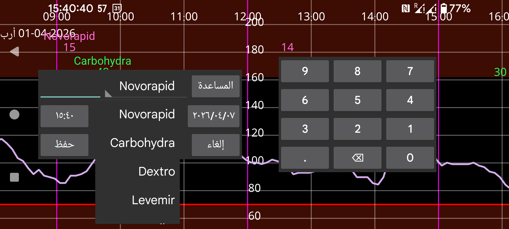

باستخدام كمية جديدة يمكنك إدخال كميات مرتبطة بأي تسمية تريدها. يمكنك ضبط التسميات من خلال القائمة اليسرى←الإعدادات←تسميات الكميات. وتظهر الكميات المُدخلة تحت تسمية معينة على ارتفاع محدد في الرسم البياني يحدده إعداد تلك التسمية.
يمكنك لاحقًا تغيير الكمية بالضغط المطوّل عليها. ويمكنك أيضًا اختيارها من قائمة الكميات المُدخلة ضمن القائمة الوسطى اليسرى←قائمة.
من الممكن أيضًا استقبال بيانات جرعات الأنسولين من NovoPen® 6 أو NovoPen Echo® Plus عبر مسح قلم NFC. بعد المسح يمكنك تغيير التسمية التي تُحفَظ تحتها الجرعات في Juggluco، كما يمكنك قصر الجرعات على الجرعات التي تأتي بعد تاريخ ووقت محددين. وعندما تكون هناك مئات الجرعات محفوظة في ذاكرة القلم، قد يستغرق الأمر أكثر من 30 ثانية قبل أن يستلم Juggluco جميعها عبر NFC.
بعض أجهزة قياس سكر الدم يمكنها إرسال قياسات وخز الإصبع عبر البلوتوث إلى Juggluco. راجع القائمة اليسرى←الإعدادات←تبادل البيانات→ أجهزة قياس سكر الدم.
ضمن القائمة اليسرى→الإعدادات→تسميات الكميات يتم أيضًا تحديد التسمية التي تُدخل تحتها كربوهيدرات الوجبة. في شاشة كمية جديدة يظهر زر وجبة لهذه التسمية. وعند الضغط على زر وجبة تنتقل إلى شاشة يمكنك فيها تحديد الوجبة من مكوّناتها. عندها يُحسَب محتوى الكربوهيدرات، أو يمكنك تحديد كمية الكربوهيدرات المطلوبة ليُحسَب مقدار أحد المكونات اللازم.
استبعاد: استبعد قياس سكر الدم من المعايرات لأن مستوى الغلوكوز يرتفع أو ينخفض، أو لأن المستشعر ما يزال في فترة الإحماء.